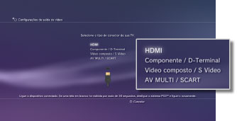
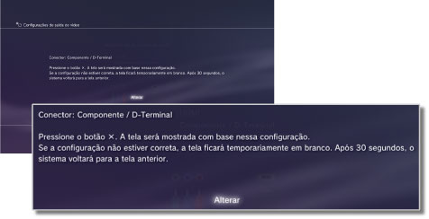
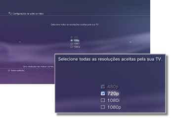
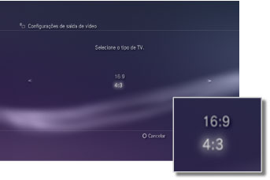
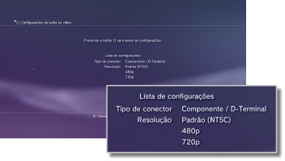

Configurações de saída de vídeo
Ajusta as configurações de saída de vídeo do sistema. Selecione as melhores configurações de saída para a TV em uso.
1. |
Verifique a resolução compatível com a sua TV.
Resolução (modo de vídeo) varia dependendo do tipo de TV. Para obter detalhes, consulte as instruções fornecidas com a TV.
|
2. |
Selecione  (Configurações) > (Configurações) >  (Configurações de exibição). (Configurações de exibição).
|
3. |
Selecione [Configurações de saída de vídeo].
|
4. |
Selecione o tipo de conector de sua TV.
A resolução (modo de vídeo) varia dependendo do tipo de conector utilizado.

| Tipo de cabo |
Conector de entrada da TV |
Modos de vídeo compatíveis *1 |
Cabo HDMI (vendido separadamente)
 |
HDMI
 |
NTSC: 1080p / 1080i / 720p / 480p
PAL: 1080p / 1080i / 720p / 576p |
Cabo AV componente (vendido separadamente)

Cabo tipo terminal D (vendido separadamente)
 |
Componente

D-Terminal *2
 |
NTSC: 1080p / 1080i / 720p / 480p / 480i
PAL: 1080p / 1080i / 720p / 576p / 576i |
Cabo AV (fornecido)

Cabo S VIDEO (vendido separadamente)
 |
Vídeo composto

S Vídeo*3
 |
NTSC: 480i
PAL: 576i |
Cabo AV MULTI (vendido separadamente) ［VMC-AVM250］ (um produto da Sony Corporation)

Cabo AV (fornecido)
Plugue conector Euro-AV (fornecido) *4
 |
AV MULTI*5

SCART*6
 |
NTSC: 480p / 480i
PAL: 576p / 576i |
| *1 |
As opções do modo de vídeo variam dependendo da região onde o sistema PS3™ foi comprado. Na América do Norte, Ásia e outras regiões NTSC, o modo de vídeo 480i é exibido como [Padrão (NTSC)]. Na Europa e outras regiões PAL, o modo de vídeo 576i é exibido como [Padrão (PAL)]. Para obter detalhes, consulte as instruções fornecidas com o produto.
|
| *2 |
O conector tipo terminal D é utilizado principalmente no Japão. As resoluções compatíveis com D1 a D5 são:
D5: 1080p / 720p / 1080i / 480p / 480i
D4: 1080i / 720p / 480p / 480i
D3: 1080i / 480p / 480i
D2: 480p / 480i
D1: 480i
|
| *3 |
S VIDEO é um formato utilizado principalmente no Japão.
|
| *4 |
O plugue conector Euro-AV está incluído somente com sistemas PS3™ vendidos na Europa.
|
| *5 |
AV MULTI é um formato utilizado principalmente no Japão. Se [AV MULTI / SCART] for selecionado, será exibida uma tela que permitirá que você selecione o tipo do sinal de saída.
|
| *6 |
SCART é um formato utilizado principalmente na Europa. Se [AV MULTI / SCART] for selecionado, será exibida uma tela que permitirá que você selecione o tipo do sinal de saída.
|
|
5. |
Selecione o tamanho da TV 3D.
Selecione o sistema para coincidir com o tamanho da tela da TV utilizada.
Se a TV utilizada não for uma TV 3D, ou se você não houver selecionado [HDMI] na etapa 4, esta tela não será exibida.
|
6. |
Altera as configurações de saída de vídeo.
Altera a resolução da saída de vídeo. Dependendo do tipo de conector selecionado na etapa 4, esta tela pode não ser exibida.

|
7. |
Selecione a resolução.
Selecione todas as resoluções compatíveis com a TV utilizada. O vídeo será reproduzido automaticamente na maior resolução possível para o conteúdo sendo reproduzido, dentre as resoluções selecionadas.*
* A resolução de vídeo é selecionada na seguinte ordem de prioridade: 1080p > 1080i > 720p > 480p/576p > Padrão (NTSC:480i/PAL:576i).
Se [Vídeo composto / S Vídeo] for selecionado na etapa 4, a tela para a seleção das resoluções não será exibida.
Se [HDMI] for selecionado, você também poderá selecionar para que a resolução seja ajustada automaticamente (o dispositivo HDMI deve estar ligado). Neste caso, a tela da seleção de resoluções não será exibida.

|
8. |
Selecione o tipo de TV.
Selecione o tipo de TV em uso. Selecione apenas quando a resolução SD (NTSC: 480p / 480i, PAL: 576p / 576i) será reproduzida, como quando [Vídeo composto / S Vídeo] ou [AV MULTI / SCART] for selecionado na etapa 4.

|
9. |
Verifique suas configurações.
Confirme que a imagem exibida está na resolução correta para a TV. Você pode voltar à tela anterior e revisar as configurações pressionando o botão  . .

|
10. |
Salve suas configurações.
As configurações de saída de vídeo são salvas no sistema PS3™. Você pode continuar a fazer as configurações de saída de áudio. Para obter detalhes sobre a saída de áudio, veja (Configurações) >  (Configurações de som) > [Configurações de saída de áudio] neste guia. (Configurações de som) > [Configurações de saída de áudio] neste guia.
|
Dicas
- Se as configurações de saída de vídeo não coincidirem com aquelas exigidas pela TV em uso, a tela pode ficar em branco enquanto a resolução é alterada. Entretanto, a tela deverá automaticamente voltar à resolução original após certo tempo. Se a tela permanecer em branco por mais de 30 segundos, desligue o sistema. Então, toque no botão de alimentação na frente do sistema por pelo menos cinco segundos antes de ligar o sistema novamente. As configurações de saída de vídeo serão automaticamente redefinidas para a resolução padrão.
- Se um dispositivo incompatível com o padrão HDCP HDCP (High-bandwidth Digital Content Protection)(High-bandwidth Digital Content Protection) for conectado ao sistema utilizando um cabo HDMI, o vídeo e/ou áudio não poderá ser reproduzido pelo sistema.
- O conteúdo protegido por direitos autorais em um Blu-ray Disc pode ser reproduzido em 1080p ao utilizar um cabo HDMI conectado a um dispositivo compatível com o padrão HDCP.
- Quando o sistema PS3™ (série CECH-3000/4000) está conectado a uma TV usando um cabo tipo terminal D, um cabo AV componente ou um multi cabo AV (um produto da Sony Corporation), a saída de alta-resolução analógica é restrita para estar compatível com a tecnologia de proteção de direitos autorais usada pelo Blu-ray™ (AACS (Advanced Access Content System)). O software de vídeo BD (BD-ROM) e BDs gravados com conteúdo de vídeo protegido por direitos autorais (tal como programas transmitidos) são reproduzidos em 480i.
- Conecte o sistema (série CECH-4200 ou mais recente) usando um cabo HDMI para reproduzir software de vídeo BD (BD-ROM) e BDs gravados com conteúdo de vídeo protegido por direitos autorais.